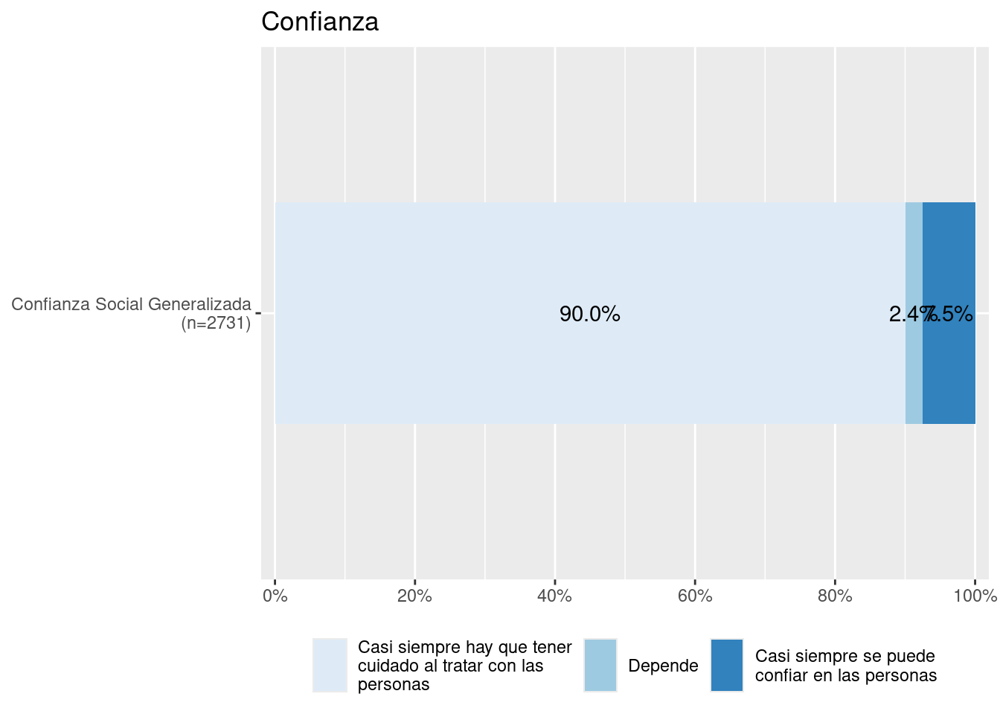
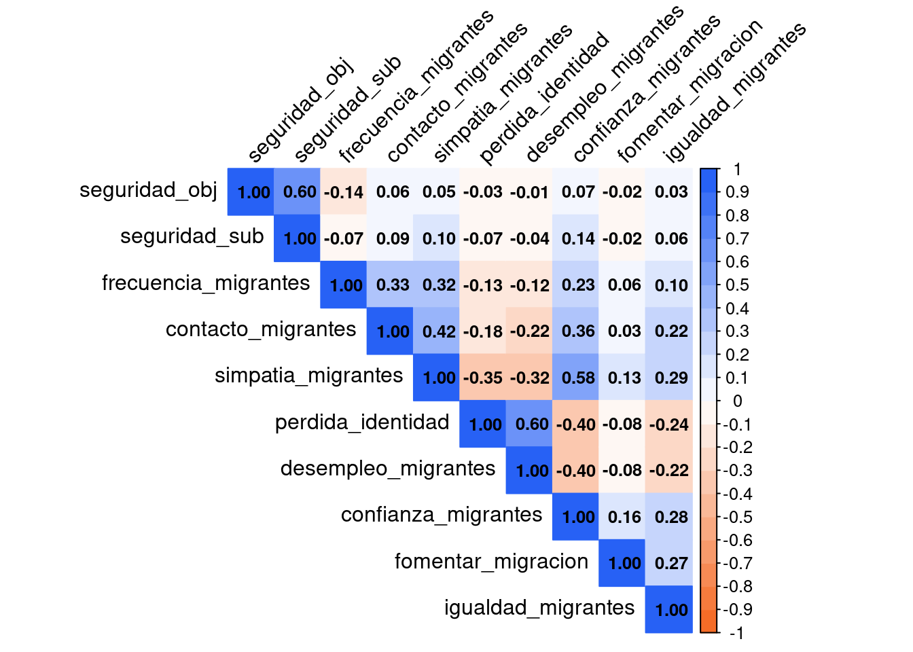
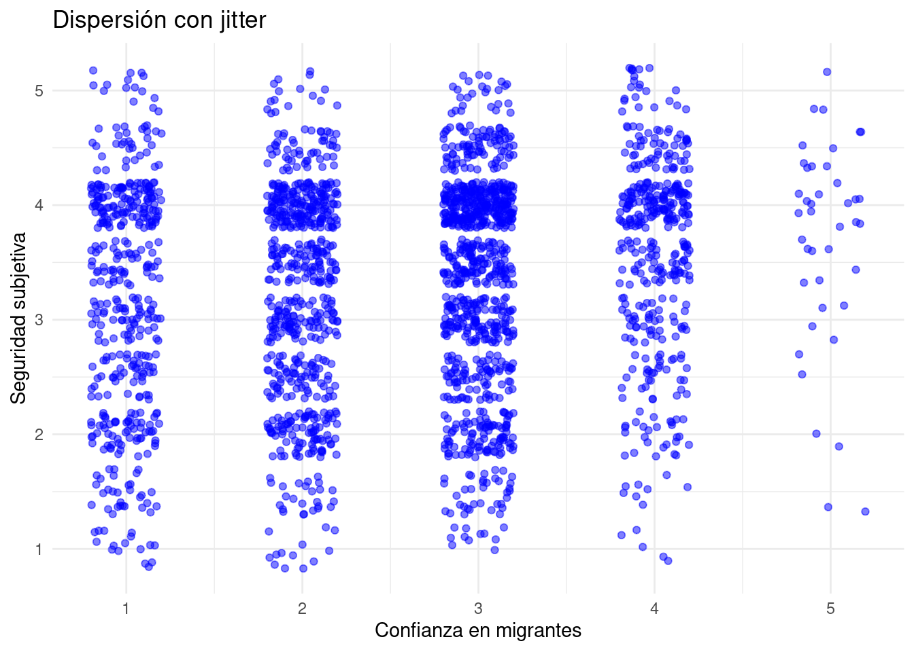

| var | label | n | NA.prc | mean | sd | range | |
|---|---|---|---|---|---|---|---|
| 2 | contacto_migrantes | Contacto positivo con [PER/HAI/VEN] | 1205 | 55.86 | 3.55 | 0.92 | 4 (1-5) |
| 7 | simpatia_migrantes | Grado de simpatia por [PER/HAI/VEN] que viven en Chile | 2564 | 6.08 | 2.82 | 1.08 | 4 (1-5) |
| 6 | perdida_identidad | Grado de acuerdo: Chile pierde su identidad con llegada de [PER/HAI/VEN] | 2690 | 1.47 | 3.01 | 1.14 | 4 (1-5) |
| 3 | desempleo_migrantes | Grado de acuerdo: Con llegada de [PER/HAI/VEN] aumenta el desempleo | 2708 | 0.81 | 3.17 | 1.15 | 4 (1-5) |
| 1 | confianza_migrantes | Grado de confianza en [PER/HAI/VEN] | 2609 | 4.43 | 2.58 | 1.01 | 4 (1-5) |
| 4 | fomentar_migracion | Grado de acuerdo: Fomentar migracion de [PER/HAI/VEN] calificados | 2698 | 1.17 | 3.33 | 1.09 | 4 (1-5) |
| 5 | igualdad_migrantes | Grado de acuerdo: Migrantes [PER/HAI/VEN] acceso a salud igualitario | 2719 | 0.40 | 3.89 | 0.77 | 4 (1-5) |

1 Descriptivos de migración
# include: false
plot_stackfrq(elsoc[, c("peleas_calle","asaltos","trafico_drogas")]) +
theme(legend.position = "bottom")
2 Creación de índices
Se crean ambos índice de seguridad y vinculación territorial
elsoc <- elsoc %>%
mutate(seguridad_sub = rowMeans(select(., seguridad_sat, seguridad_perc), na.rm = TRUE))elsoc <- elsoc %>%
mutate(seguridad_obj = rowMeans(select(., peleas_calle, asaltos, trafico_drogas), na.rm = TRUE))elsoc <- elsoc %>%
mutate(sentido_pertenencia = rowMeans(select(., barrio_ideal, barrio_integracion, barrio_identidad, barrio_pertenencia), na.rm = TRUE))elsoc <- elsoc %>%
mutate(satisfaccion_barrio = rowMeans(select(., barrio_amigos, barrio_sociable, barrio_cordial, barrio_colaborador), na.rm = TRUE))3 Correlaciones
3.1 Correlación seguridad
corrsegmig <- round(cor(seg_mig, use = "pairwise.complete.obs"), 2)

Como se puede apreciar en Figure 1, la mayoría de los indicadores de migración tienen una correlación bastante baja con ambos índices de seguridad. Los más altos los tiene la seguridad subjetiva correlacionada con confianza en migrantes (.15) y simpatía hacia los migrantes (.11).
ggplot(seg_mig, aes(x = confianza_migrantes, y = seguridad_sub)) +
geom_jitter(width = 0.2, height = 0.2, alpha = 0.5, color = "blue") +
labs(
x = "Confianza en migrantes",
y = "Seguridad subjetiva",
title = "Dispersión con jitter"
) +
theme_minimal()Warning: Removed 265 rows containing missing values or values outside the scale range
(`geom_point()`).
3.2 Correlación vínculos territoriales
barrio_mig <- elsoc %>%
select(sentido_pertenencia, satisfaccion_barrio, contacto_migrantes, simpatia_migrantes,
perdida_identidad, desempleo_migrantes, confianza_migrantes,
fomentar_migracion, igualdad_migrantes)corrbarriomig <- round(cor(barrio_mig, use = "pairwise.complete.obs"), 2)
En Figure 2 se pueden ver los cruces entre los índices de vinculación territorial con los indicadores de migración. Las correlaciones entre las mediciones de territorio y la migración son en general bajas, siendo satisfacción del barrio con confianza en migrantes la más alta (.12).